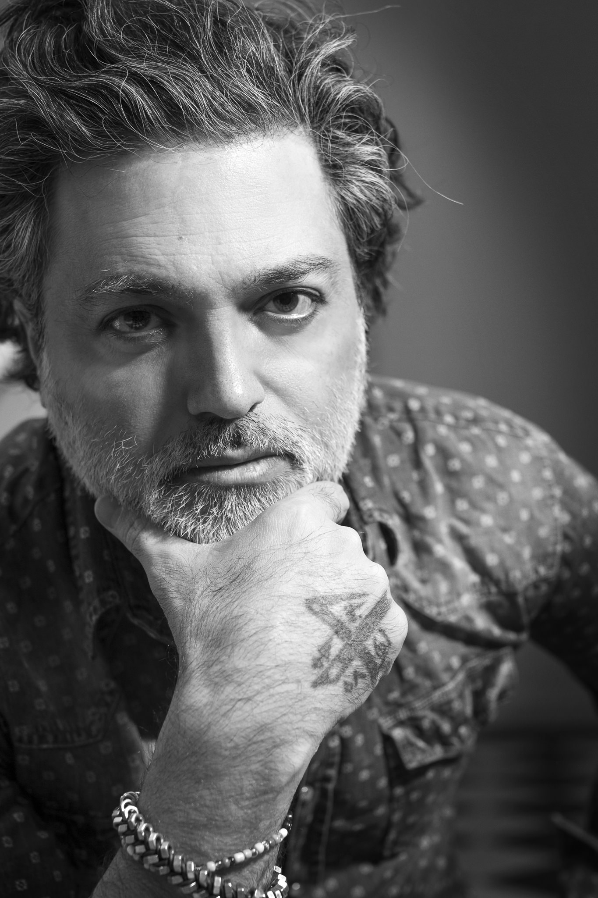
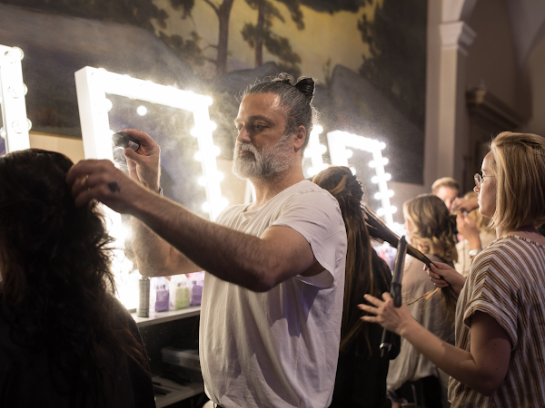

Priser
Kontakt
Boka
Priser
Kontakt
Boka

Hos Chukro förser vi våra gäster med skräddarsydda tjänster efter vår kunds personlighet och stil.
Boka

Salong Chukro är en fullservicesalong belägen mitt på Östermalm Brunnsgatan 4. Chukro grundades av frisören Jony Chukro. Det är här som vi välkomnar och vi ser till att du bekantar dig med vår underbara atmosfär och de omfattande tjänster vi erbjuder.
Vi förser stolt våra gäster med precisionsklippning, styling, detaljerad highlighting, extensions och personlig service vars mål är att överträffa förväntningarna.